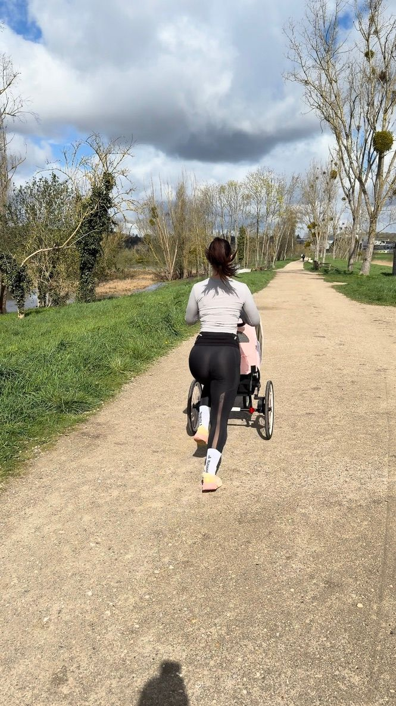
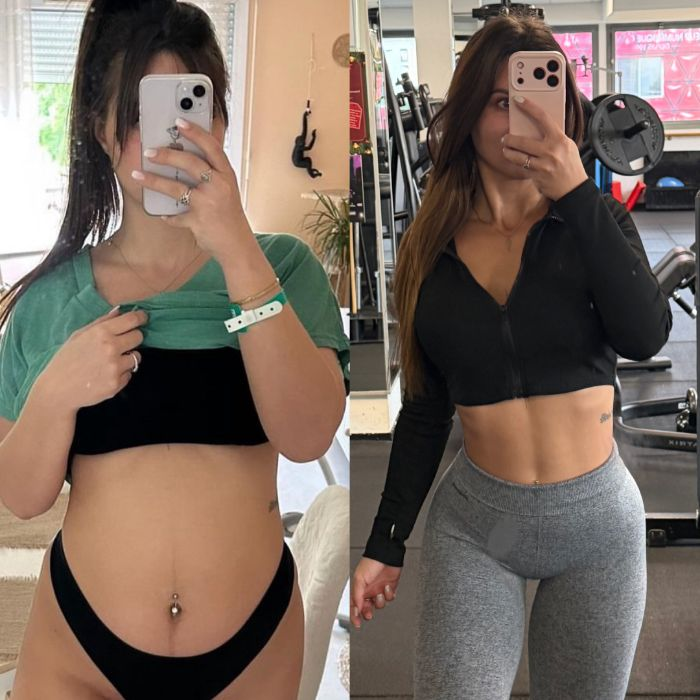
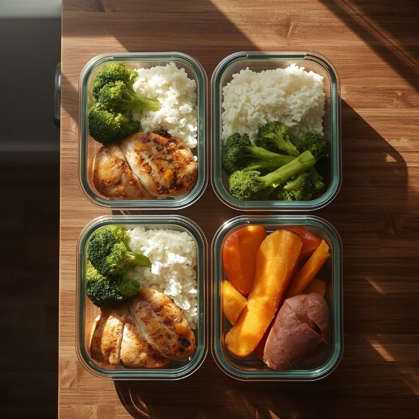

Ventre plat
en 7 jours
7 mini-routines douces pour dégonfler et te sentir mieux dans ton corps. Pour toutes les femmes, débutantes bienvenues. Sans régime, sans culpabilité. 💛
Quel programme est fait pour toi ?
Choisis ton objectif 👇 Je te montre exactement quoi faire après ces 7 jours pour l'atteindre.
Pourquoi ton ventre gonfle
Un ventre qui gonfle, ce n'est presque jamais « manger trop ». C'est souvent un ensemble de petites choses du quotidien — celles sur lesquelles on va agir cette semaine.
Les ballonnements. Digestion lente, air avalé en mangeant vite. Le ventre gonfle en journée, se calme la nuit — c'est du transit, pas de la graisse.
La sédentarité. Quand on bouge peu, les muscles profonds (le transverse) s'endorment et ne tiennent plus la sangle.
La posture. Le bassin bascule, le dos se creuse, le ventre ressort. En te replaçant, tu perds déjà quelques centimètres visuels.
Le stress. Le cortisol favorise le stockage au niveau du ventre. Respirer profondément, c'est déjà un exercice « ventre plat ».
Le manque de sommeil. Mal dormir dérègle l'appétit et gonfle. On fait avec, sans se juger, en soignant le reste.
Pas assez d'eau. Paradoxe : moins tu bois, plus ton corps retient l'eau. Boire régulièrement dégonfle.
Comment ça marche
⏱️ 10 minutes, vraiment
Chaque jour = 2 min d'échauffement + un petit circuit + 1 min de retour au calme. Le meilleur moment est celui que tu tiendras.
🔁 Les « tours »
Un circuit se fait en plusieurs tours : tu enchaînes les exercices puis tu recommences. Débutante : commence par 2 tours.
🌬️ La règle d'or : respirer
À chaque effort, expire en rentrant le nombril vers ta colonne. C'est ça qui muscle le transverse et affine la taille.
🚫 Zéro crunch
Pas d'abdos classiques qui font bomber le ventre. On travaille en gainage, respiration et debout : plus sûr.

Sécurité post-partum

🤍 Si tu as accouché récemment, lis ça d'abord
- Fais valider ta rééducation du périnée par ta sage-femme ou ton kiné avant de reprendre les abdos.
- Évite tout exercice qui fait bomber le ventre (crunchs) : en cas de diastasis, ça aggrave l'écart.
- Ce guide privilégie respiration, transverse et gainage doux — ce qui convient le mieux en post-partum.
- Aucune douleur, aucune fuite, aucune pesanteur. Si l'un apparaît : on s'arrête et on demande l'avis d'un pro.
Tes 7 jours
Manger pour dégonfler
Aucun régime, aucun calcul de calories. Juste quelques échanges malins + la méthode de l'assiette.
| Fait souvent gonfler | On essaie plutôt |
|---|---|
| Sodas & boissons gazeuses | Eau + citron / menthe |
| Chewing-gum (on avale de l'air) | Une tisane digestion |
| Plats industriels très salés | Fait maison, herbes & épices |
| Grosse assiette de crudités le soir | Légumes cuits / vapeur |
| Pain blanc & viennoiseries | Pain complet, flocons d'avoine |
| Manger vite, devant un écran | Poser la fourchette, mâcher |

🥗 Le complément parfait 7 €Ne te demande plus « qu'est-ce que je mange ce soir ? »
Tu bouges 10 min par jour, super. Mais si l'assiette ne suit pas, ton ventre regonfle. Mon Guide Recettes Sculptantes te dit quoi cuisiner, jour après jour.
- 21 recettes faciles, ingrédients de supermarché
- Classées par objectif : drainage, anti-rétention, satiété
- Liste de courses prête : tu n'as plus qu'à cocher
- Accès immédiat, sur ton téléphone
Ton tracker 7 jours
Coche ta séance et ton eau chaque jour — ça se sauvegarde tout seul sur ton téléphone. Rien de plus motivant que de voir la ligne se remplir.
Mon histoire

Je suis passée par là, moi aussi. Après ma grossesse, je regardais mon ventre en me demandant s'il redeviendrait « comme avant ». Ce qui m'a sauvée, ce n'est pas un régime : c'est la régularité et la douceur — exactement ce que tu viens de faire.
Aujourd'hui j'accompagne des femmes comme toi : débutantes, en reprise de sport, jeunes mamans, souvent débordées. Mon métier : rendre le sport simple, bienveillant et faisable.
Tu viens de prouver que tu en es capable.
Ne t'arrête pas maintenant.
Ventre Plat — 14 jours
Tu as lancé la machine. Maintenant, on passe à la vitesse supérieure.
- 14 séances guidées et progressives
- Toujours 10–20 min, toujours sans matériel
- Accès à vie, à ton rythme
Marre de recommencer seule ?
Coaching en ligne : un programme fait pour TON corps, ton emploi du temps et tes objectifs. Je te suis, je t'ajuste, je te remotive. Tu n'es plus seule.
Je veux être coachée par Ornella →2 questions, 20 secondes : je t'oriente vers LE programme fait pour toi.
🧭 Faire le mini-quiz (20 s) → 👀 Voir les transformations de mes clientes → 💬 Une question ? Écris-moi sur WhatsApp 📄 Télécharger la version imprimable (PDF)